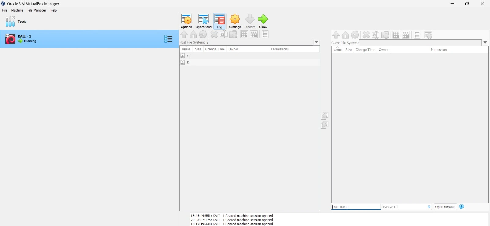
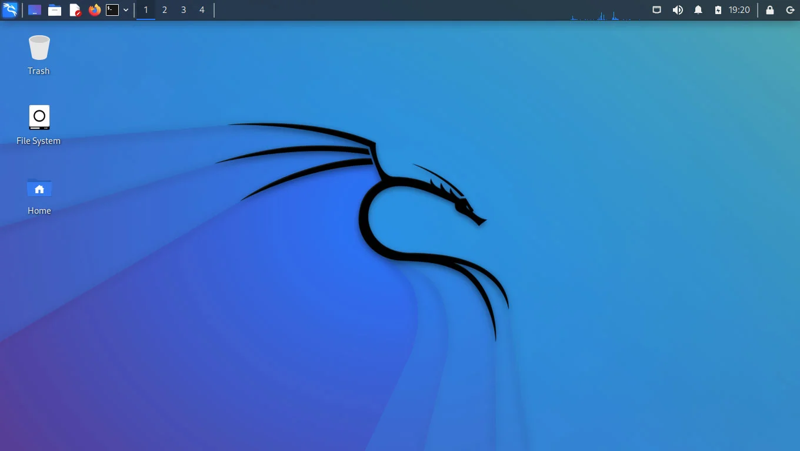
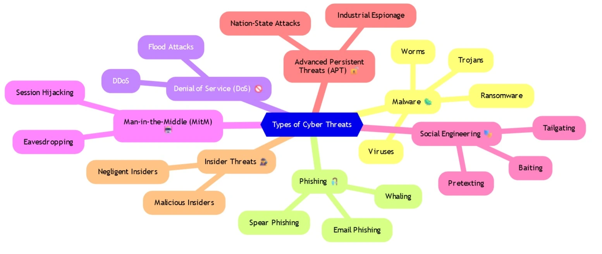
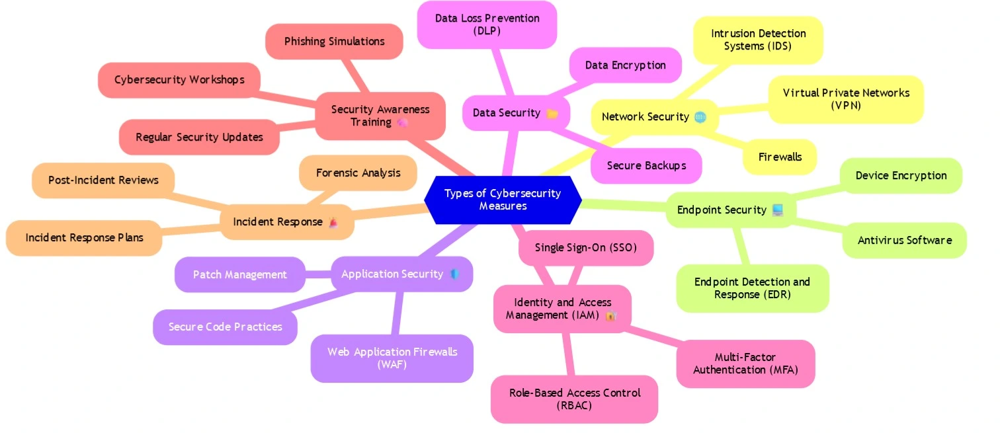
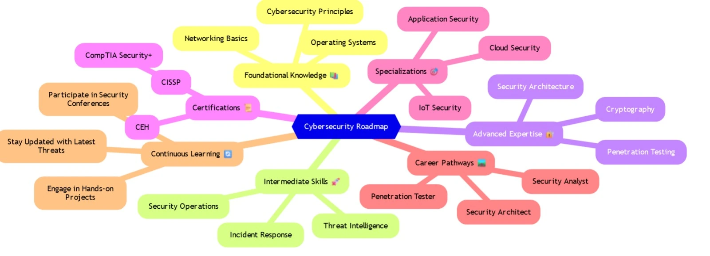

Cybersecurity involves protecting computer systems, networks, and data from cyber threats. These threats can come from various sources, including cybercriminals, hackers, or even insider threats. The goal of cybersecurity is to ensure the confidentiality, integrity, and availability of information, which are often referred to as the CIA triad. Effective cybersecurity requires a multi-layered approach, involving technology, policies, and user awareness.
As digital transformation continues, the importance of cybersecurity has grown. With more devices connected to the internet and more data being generated, the potential for cyber attacks has increased. Cybersecurity professionals work to anticipate and mitigate these risks, using tools like firewalls, encryption, and intrusion detection systems to defend against attacks.
For more details, visit the Cybersecurity & Infrastructure Security Agency.
VirtualBox is an open-source virtualization software developed by Oracle. It allows users to run multiple operating systems on a single physical machine. This is particularly useful for cybersecurity professionals who need to test different environments or run specific software that might not be compatible with their primary operating system.
For example, a security researcher might use VirtualBox to run a virtual machine (VM) with Kali Linux to perform penetration testing. VirtualBox provides the ability to take snapshots of the VM, allowing users to save the state of their virtual environment at a particular point in time. This feature is crucial for testing, as it allows the user to revert to a previous state if something goes wrong during an experiment.
You can download and install VirtualBox from the official website: VirtualBox.org.
Kali Linux is a Debian-based Linux distribution specifically designed for penetration testing and digital forensics. It comes pre-installed with numerous tools for various information security tasks, such as network analysis, vulnerability assessment, and password cracking. Kali Linux is widely used by cybersecurity professionals, ethical hackers, and penetration testers.
Some of the most popular tools included in Kali Linux are Nmap for network scanning, Wireshark for packet analysis, and Metasploit for exploiting vulnerabilities. The distribution is regularly updated with new tools and features, making it a critical resource for those working in cybersecurity. Kali Linux is also designed to be customizable, allowing users to add or remove tools as needed.
For installation and documentation, visit the official website: Kali.org.
Cyber threats are malicious attempts to access, damage, or disrupt computer systems, networks, or data. They can take many forms, including malware, phishing attacks, ransomware, and denial of service (DoS) attacks. Each type of threat has its own methods and techniques for causing harm.
Malware, for instance, is software designed to infiltrate and damage a computer system without the user's knowledge. Phishing attacks involve tricking users into providing sensitive information, such as passwords or credit card numbers, by pretending to be a trustworthy entity. Ransomware is a type of malware that encrypts a victim's data and demands a ransom for its release. Understanding these threats is essential for developing effective cybersecurity strategies.
For more information on types of cyber threats, visit Medium Article About Cyber Threats.
Effective cybersecurity measures are essential for protecting against cyber threats. These measures include firewalls, antivirus software, encryption, and multi-factor authentication (MFA). Firewalls act as a barrier between trusted and untrusted networks, controlling incoming and outgoing traffic based on predetermined security rules.
Encryption is the process of converting data into a code to prevent unauthorized access. It is widely used to protect sensitive information, such as financial transactions or personal data. Multi-factor authentication adds an extra layer of security by requiring users to provide two or more verification factors to gain access to a resource. Regular software updates and patches are also crucial, as they address vulnerabilities that could be exploited by attackers.
Learn more about cybersecurity measures at Common Cybersecurity Measures.
Cybersecurity best practices involve a set of guidelines and behaviors that help protect systems and data from cyber threats. These practices include using strong, unique passwords for each account, enabling two-factor authentication, and regularly backing up important data. It's also important to stay informed about the latest threats and security trends.
Employee training is another critical aspect of cybersecurity. Educating staff about the dangers of phishing emails, social engineering, and other common attack vectors can significantly reduce the risk of a successful cyber attack. Organizations should also develop and enforce a comprehensive cybersecurity policy that outlines acceptable use of technology, incident response procedures, and other critical security measures.
For more details on cybersecurity best practices, visit CISA Cybersecurity Tips.
The field of cybersecurity is constantly evolving as new threats and technologies emerge. One of the most significant trends is the increasing use of artificial intelligence (AI) and machine learning (ML) in threat detection and response. These technologies can analyze vast amounts of data quickly and identify patterns that might indicate a security threat.
Another emerging trend is the focus on cloud security. As more organizations move their data and applications to the cloud, securing these environments has become a top priority. Internet of Things (IoT) security is also gaining attention as the number of connected devices continues to grow. Ensuring that these devices are secure is critical, as they can be exploited by attackers to gain access to larger networks.
Stay updated on emerging trends in cybersecurity at Gartner Security & Risk Management.
There are numerous websites that provide valuable resources for cybersecurity professionals. Some of the most useful include:
Cybersecurity professionals rely on a wide range of tools and libraries to protect systems and data. Some of the essential tools include:
A cybersecurity roadmap provides a structured approach to building a career in cybersecurity. It typically starts with foundational knowledge in networking, operating systems, and programming. From there, individuals can pursue specific certifications, such as CompTIA Security+, Certified Ethical Hacker (CEH), or CISSP (Certified Information Systems Security Professional).
Practical experience is also critical. This can be gained through internships, entry-level positions, or hands-on practice using platforms like TryHackMe or Hack The Box. As professionals gain experience, they can specialize in areas like penetration testing, incident response, or threat hunting. Continual learning and staying updated with the latest trends and technologies are essential for a successful career in cybersecurity.
Explore a detailed cybersecurity roadmap at CyberSeek Pathway.
Cybersecurity offers a wide range of career opportunities, each with its own set of responsibilities and required skills. Some of the most common roles include:
Other career paths include roles in digital forensics, incident response, and risk management. The demand for cybersecurity professionals is high, and the field offers competitive salaries and opportunities for advancement.
For more on cybersecurity careers, visit (ISC)² Workforce Study.
Capture The Flag (CTF) challenges are a popular way for cybersecurity enthusiasts to test and improve their skills. These challenges often involve finding and exploiting vulnerabilities in a simulated environment to capture a "flag," which is a piece of data hidden within the challenge.
CTFs are an excellent way to learn practical skills in areas such as cryptography, reverse engineering, web security, and more. Many platforms offer CTF challenges, including:
Participating in CTFs can help build your resume, expand your knowledge, and connect you with the cybersecurity community.
Social engineering is a manipulation technique that exploits human error to gain private information, access, or valuables. In cybersecurity, it is often used to trick individuals into breaking normal security procedures. Social engineering attacks can take many forms, such as phishing emails, pretexting, baiting, and quid pro quo attacks.
Social engineering relies heavily on human interaction and often involves manipulating people into breaching security protocols. For example, an attacker might pose as a trusted entity in an email to persuade the victim to divulge confidential information. The best defense against social engineering attacks is awareness and training. Organizations should regularly educate employees on how to recognize and respond to social engineering attempts.
Learn more about social engineering tactics and defenses at Social-Engineer.org.